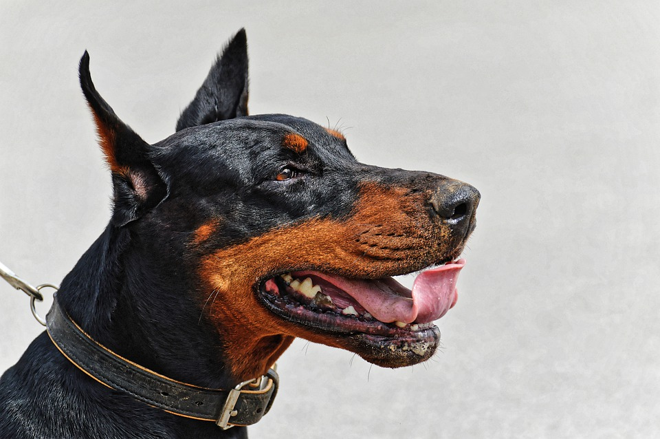
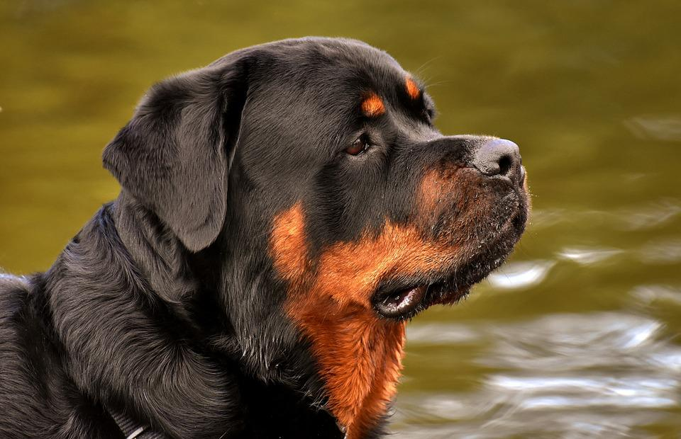
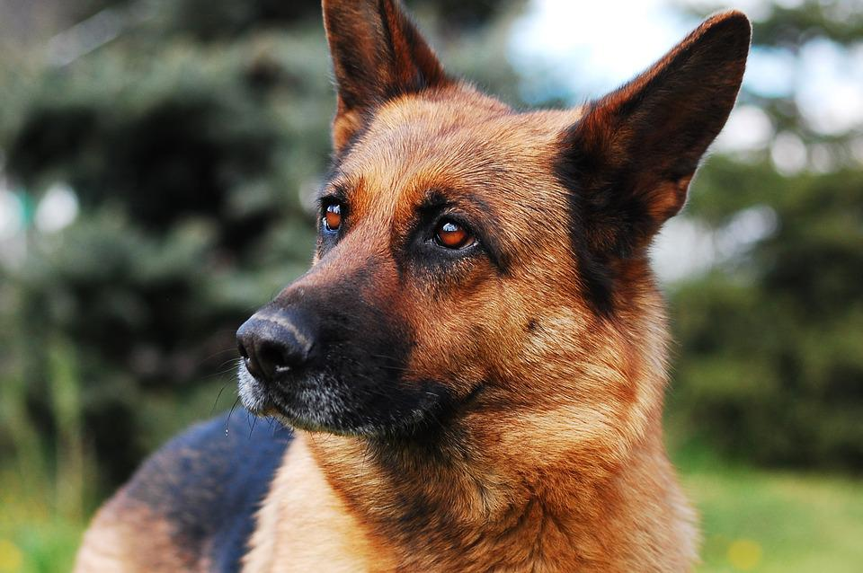

Seu pet esta te esperando
Adote-me

Doberman
Dobermann é uma raça de cães do grupo pinscher, oriunda da Alemanha. A raça foi desenvolvida inicialmente por Karl Friedrich Louis Dobermann em Apolda na Alemanha por volta de 1860.
- Idade: 2 anos
- Cor: Misturado
- Castrado: Não
- Raça: Rottweiler
- Tamanho: Grande

Rottweiler
Rottweiler é uma raça de cães molossos desenvolvida na Alemanha. Criada por açougueiros da região de Rottweil para o trabalho com o gado, logo tornou-se um eficiente cão de guarda.
- Idade: 2 anos
- Cor: Misturado
- Castrado: Não
- Raça: Rottweiler
- Tamanho: Grande

Pasto Alemão
Pastor-alemão ou lobo-da-alsácia é uma raça canina proveniente da Alemanha. Em sua origem era utilizado como cão de pastoreio de rebanhos.
- Idade: 2 anos
- Cor: Misturado
- Castrado: Não
- Raça: Rottweiler
- Tamanho: Grande